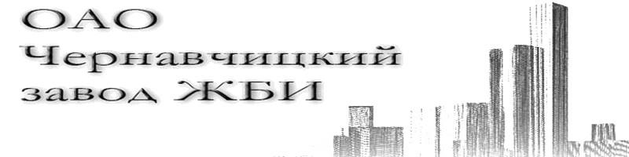

Конструкции железобетонные для мелиоративных систем
Гасители Т-образные
Оголовки портальные
Оголовки Г-образные
Башни регуляторов трубчатых с прямоугольными трубами
Плиты крепления
Диафрагмы
Прямоугольные трубы
Плиты плоские железобетонные
Плиты бетонные составные на гибких связях (универсальные гибкие бетонные маты)
Конструкции для пешеходных и мостовых переездов
< назад <